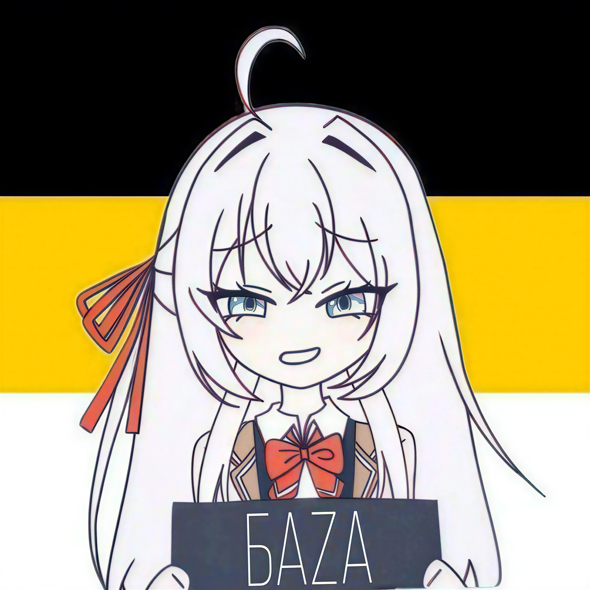

Кто она
Махиру Сиина — соседка и одноклассница Аманэ Фудзимии. В школе её знают как «Ангела» за красоту, хорошие оценки, спокойствие и безупречную манеру держаться.
К профилю →Имперский ангел / Страница персонажа
Тёплая бумага, строгая типографика и мягкая палитра Махиру: льняной блонд, карамельные глаза, кремовый свет и спокойный школьный образ.
Профиль персонажа
Главная героиня «Ангел по соседству меня балует». В школе её называют Ангелом: она отличница, аккуратная, сдержанная и почти недостижимая на публике. Рядом с Аманэ образ становится теплее: не идеальная статуя, а человек, которому тоже нужна забота.

О Махиру
Махиру Сиина — соседка и одноклассница Аманэ Фудзимии. В школе её знают как «Ангела» за красоту, хорошие оценки, спокойствие и безупречную манеру держаться.
К профилю →Её визуальный код — мягкий, домашний и чистый: светлые льняные волосы, карамельные глаза, кремовые фоны, тёплый свет и аккуратная школьная форма.
К цитате →Цитата
Bitte... ich bin doch nicht allein? Du bist doch meine Rettung?
Немецкую фразу оставил как эмоциональный центр страницы. Вокруг неё — спокойная русская подача, без лишних эффектов и без потери мягкого настроения Махиру.
お願い...一人じゃないよね？あなたは私の救いだから